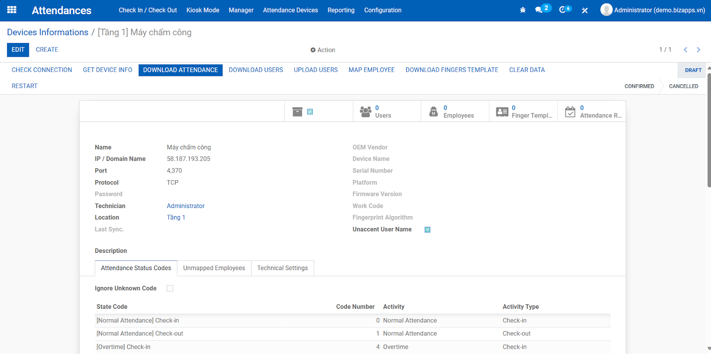
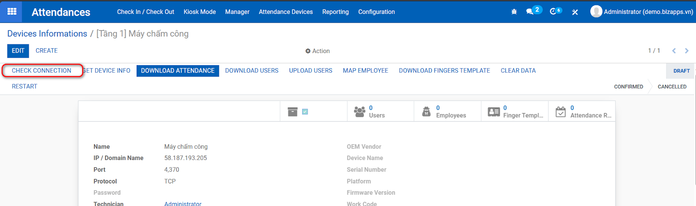
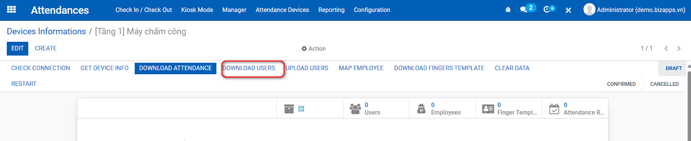
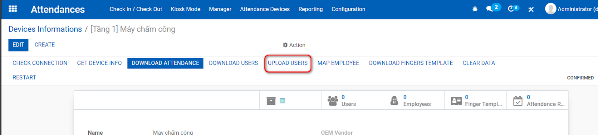
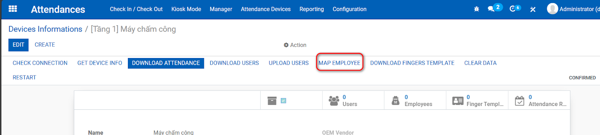

Features to connect timekeeping machine with Odoo system as well as match timekeeping records with personnel records
Access Time Attendance / Time Attendance / Device Information to establish a time attendance connection with Odoo

Once you have entered all the timekeeper information, perform Check the connection

Link device users and employees on odoo
Click “Download users” if you want to download users from the timekeeping device to Odoo

Click “Upload users” if you want to upload users from odoo to the timekeeping device

Click “Map employee” if you want to automatically link users to employees on Odoo

By default, the system runs every 30 minutes to: